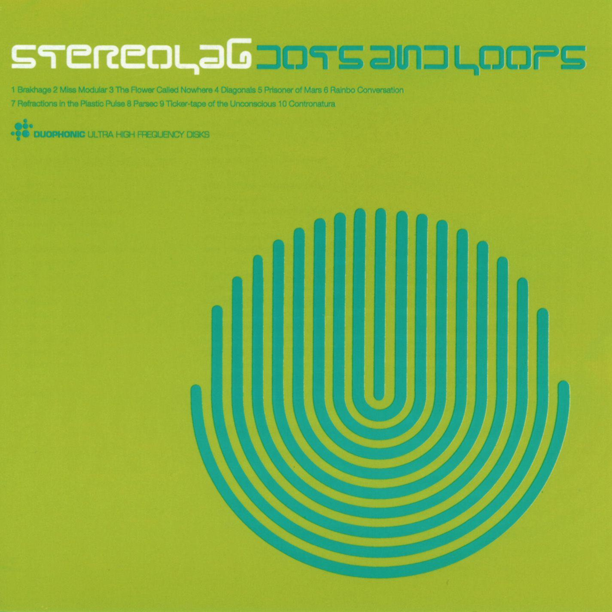
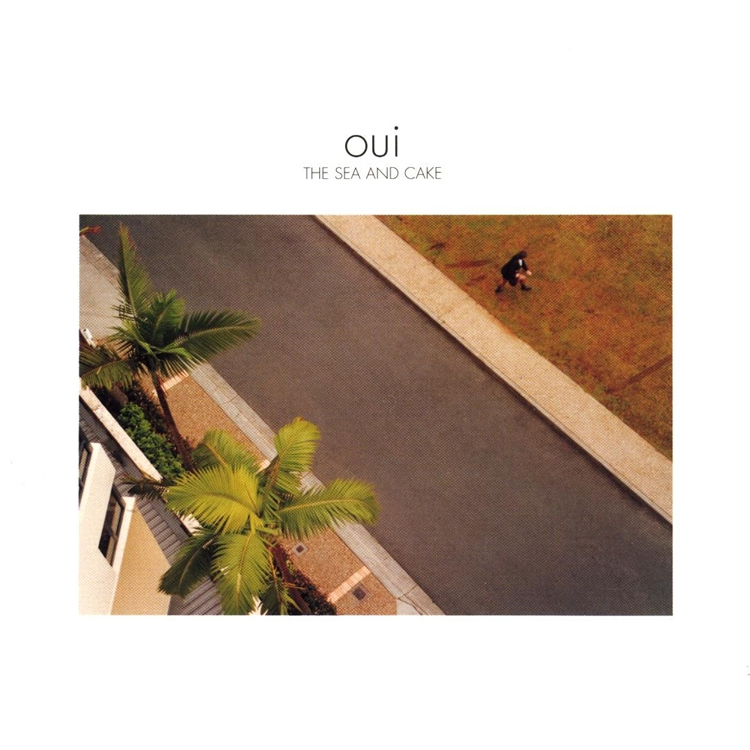
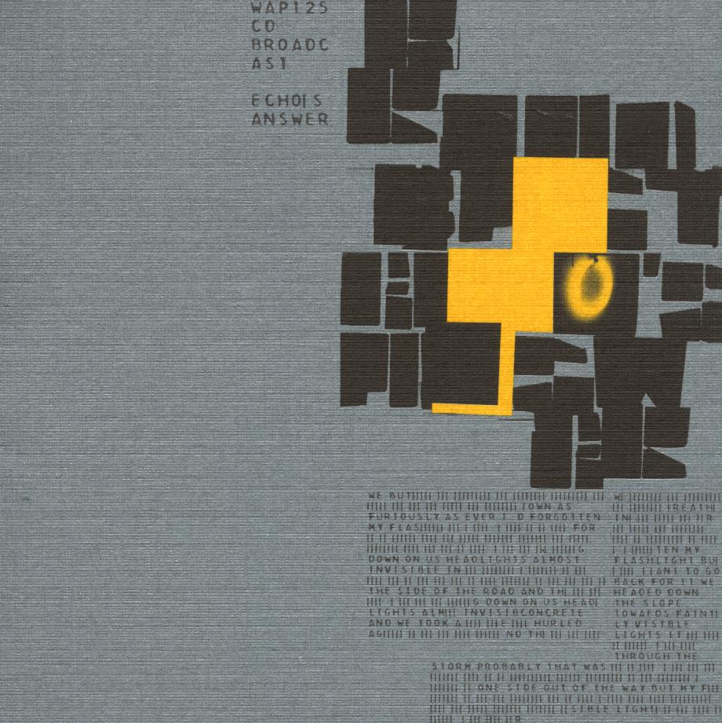

Stereolab are an alternative music band formed in 1990 in London, England. The band originally comprised songwriting team Tim Gane (guitar/keyboards) and Letitia Sadier (vocals/keyboards/guitar). Other long-time members include Mary Hansen (backing vocals/keyboards/guitar), who played with the group from 1992 until her accidental death in 2002, and Andy Ramsay (drums), who joined in 1993, and who is still in the official line-up.
Called "one of the most fiercely independent and original groups of the Nineties", Stereolab were one of the first bands to be termed "post-rock". Their primary musical influence was 1970s krautrock, which they combined with lounge, 1960s pop, and experimental pop music.
read more

The group formed in the mid-1990s from members of The Coctails (Archer Prewitt), Shrimp Boat (Sam Prekop and Eric Claridge), and Tortoise (John McEntire); the group's name came from a willful reinterpretation (as the result of an accidental miscomprehension) of "The C in Cake", a song by Gastr del Sol. Starting with 1997's The Fawn, the group has relied on electronic sound sources, such as drum machines and synthesizers, to color its music, but has retained its distinctive post-jazz combo style. The band has shied away from releasing singles, preferring the album format. Contrary to his multi-instrumentalist role in Tortoise, John McEntire almost exclusively plays drums in The Sea and Cake.
read more

Broadcast are an indie electronic band, founded in Birmingham, England. Broadcast's original members were Trish Keenan (vocals), Roj Stevens (keyboards), Tim Felton (guitar), James Cargill (bass) and Steve Perkins (drums). Various drummers played with the band, including Keith York, Phil Jenkins, Jeremy Barnes, Steve Perkins, and Neil Bullock. After the 2011 death of Trish Keenan, Cargill remains the only member.
The band's style is a mixture of electronic sounds and Keenan's 1960s-influenced vocals. It is heavily influenced by the 1960s influenced American psychedelic group The United States of America, using many of the same electronic effects.
read more